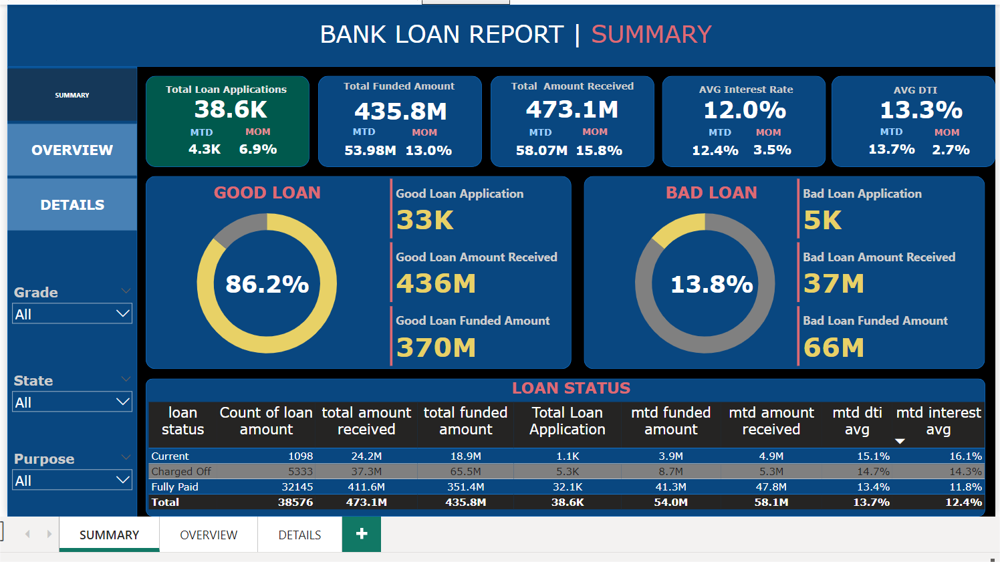
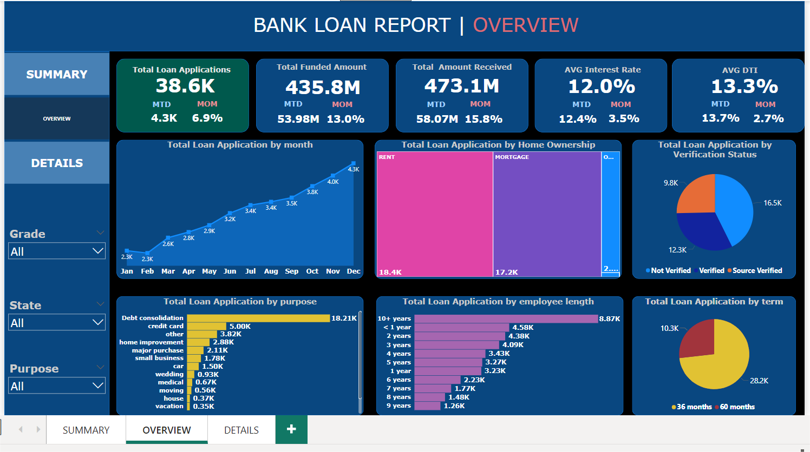
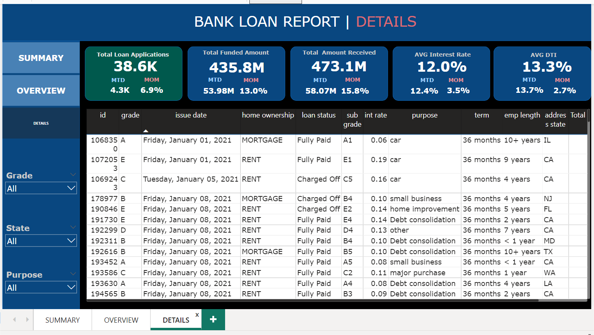

Bank Loan Data Analysis
Tools: Power BI and SQL
Introduction:
The Bank Loan Report project is designed to provide a comprehensive analysis of our lending activities through three key dashboards: Summary, Overview, and Details. The Summary Dashboard focuses on crucial loan metrics, including total applications, funded amounts, and repayment data. The Overview Dashboard visualizes these metrics through various charts to identify trends and regional patterns. The Details Dashboard offers an in-depth view of all essential loan data, enabling detailed analysis and easy access to critical information.
Dashboard Details:
Summary:
Highlights key metrics such as total loan applications, funded amounts, amount received, average interest rates, and average Debt-to-Income (DTI) ratio. It includes performance indicators for 'Good' and 'Bad' loans, and a loan status grid view.
Overview:
Uses line charts to show monthly trends, filled maps for regional analysis, donut charts for loan term distribution, bar charts for employee length and loan purpose breakdown, and tree maps for home ownership analysis.
Details:
Provides a detailed and user-friendly interface to view all key loan-related data, borrower profiles, and loan performance metrics in a consolidated format.
